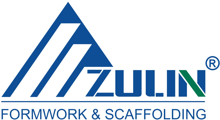

首页 / 混凝土、地面与装修施工设备 / 带支撑的楼板模板系统(H20木工字梁、钢制楼板支撑、叉头)

参考图片: Scafom-rux · Amazon.de (Schalungsstuetze). 仅示意产品类型，并非中国制造商的产品。
12 · 混凝土、地面与装修施工设备
带支撑的楼板模板系统(H20木工字梁、钢制楼板支撑、叉头)
带可调钢支撑的梁式楼板模板,用于房建和翻新中的现浇混凝土楼板。
技术参数
| 楼板支撑 | 钢制、高度可调,承载等级符合EN 1065(典型约20-30 kN,视伸出长度而定) |
|---|---|
| 支撑型号 | 分级型号,适用层高至约4.5 m(以报价为准) |
| 模板梁 | H20木工字梁,高度200 mm,符合EN 13377 |
| 模板面板 | 三层板或胶合板,约21 mm,防水胶合 |
| 支撑头 | 用于承托梁的叉头,可选三脚架 |
| 防腐 | 镀锌或喷漆(涂层厚度见检测报告) |
| 设计计算 | 按EN 12812提供布置图和结构计算 |
向制造商发送含技术参数、标准和产品图片的邮件
内部
本产品供应商

详情与联系方式
自2003年起在北京经营,据目录信息为中国模板和脚手架领域的先行者之一(类型为制造商兼贸易商,未见EN证书)。
- Maps
- 📍 在谷歌地图查看工厂
备选制造商 (1)
Qingdao ScaffoldingTIER B
Qingdao ScaffoldingTIER B
在搜索结果中与北京祖林并列被列为钢支撑和楼板模板供应商;完整公司名称、价格及联系方式未核实。
- Maps
- 📍 在谷歌地图查看工厂
中国最低价需询价
德国市场价（净价）–
需询价
- 到岸成本
- –
- 销售价（净价）
- –
- 利润率
- –
- 中国目标价
- –
- 相比德国采购节省
- –
- 最小起订量
- –
- 价格条款
- –
每件，净价. 中国价格为挂牌价（未议价）。运费、关税和手续费为估算值；进口增值税可作为进项税抵扣。 假设：按产品组计运费，手续费 3%，售价比德国市场价低 15%，目标利润率 25%。
产品描述
带支撑的楼板模板通过模板梁和可调钢支撑承载现浇楼板的新拌混凝土和钢筋,是新建和翻新工程中楼层板、梁和楼板更换的常用体系。
更多
德国专业用户要求支撑具备符合EN 1065的承载等级证明、H20木工字梁尺寸稳定并符合EN 13377、整套系统有可审核的EN 12812结构计算、防腐处理良好,并提供德文的安装和使用说明。系统交付时必须附有符合性证明(EN 1065检测报告)、材料证书和木材来源证明。作为进口商,AE Global Traders对产品合规性和现场的安全使用承担责任。
海关
| 海关编码 | 73084000 |
|---|---|
| 关税税率 | 请在 TARIC 中核实 |
标准与标识（德国/欧盟）
EN 1065可调伸缩钢支撑,产品规范、设计与试验EN 13377工厂预制木模板梁,要求与分类EN 12812支撑脚手架(模板支架),性能要求与设计EN 13670混凝土结构施工
内部 · 备注
需向供应商索取
- 支撑的EN 1065检测报告,注明承载等级、伸出长度,产品上带有标识
- H20木工字梁符合EN 13377的资料或证书,以及木材来源证明(欧盟木材法规、EUDR)
- 钢材的EN 10204 3.1材料证书,以及镀锌或涂装的证明
- 德文安装和使用说明,含标准布置方案和支撑间距
- 每批次的抽样加载试验和焊缝检验,以及书面质保
来源
Zulin 出现在 made-in-china 的楼板台模和钢支撑类别中(制造商兼贸易商,据目录自 2003 年起);未找到带价格的具体楼板模板条目(详情页返回 HTTP 403)。备选 Shandong Prima 和 Qingdao Scaffolding 据搜索结果为钢支撑和楼板模板供应商。每平方米或每套的价格须询价。
本类别其他产品

前进式平板夯,约90公斤,汽油发动机(约5.5马力)

XPS挤塑保温板100毫米(约1250 x 600毫米)

混凝土振动棒(插入式振动器),电动230伏

抹灰机(砂浆喷涂机),电动230/400伏

钢框模板(墙模),单元约600 x 1200毫米

铝合金瓷砖收边条(L型/收口条),2.5米

可逆式平板夯,约400公斤,柴油发动机,液压前进/后退

自动铺砖机,用于混凝土路面砖整层铺设

地面铲除机(铲地板/瓷砖机),电动,手扶式

手扶式混凝土抹光机(叶片式),汽油发动机,直径约900毫米

钢制工作支架/脚手架马凳,镀锌,高度可调(每件)

小型起重机/砌筑吊,履带底盘(蜘蛛式),起重量约500公斤,臂展约8米

矿物棉保温材料(岩棉板/保温毡),100毫米,导热系数等级035
 潮流
潮流瓷砖找平系统套装（卡扣、楔子、钳子）
 交叉销售
交叉销售抹灰机易损件套装（D6-3 转子/定子、NW25 砂浆软管、喷嘴）
 交叉销售
交叉销售平板夯用聚氨酯保护垫（Vulkollan 类型，螺栓固定）
 交叉销售
交叉销售混凝土插入式振动器备用振动棒（含软轴，Ø35/45 mm，1.5–6 m）

混凝土搅拌机 140 升（230 伏，0.5 马力），钢制滚筒自落式

汽车泵（泵车）约38米臂架

混凝土搅拌站（固定式）约60立方米/小时

混凝土搅拌运输车 10立方米

混凝土制砖机（砌块、铺路砖、路缘石）

铝合金刮尺,2米,H型

手动瓷砖切割机1200毫米

电动无气喷涂机

混凝土大抹板(带杆)

地面铣刨机250毫米(电动)

盘式搅拌机350升(电动)

混凝土修边器(不锈钢,弧形)